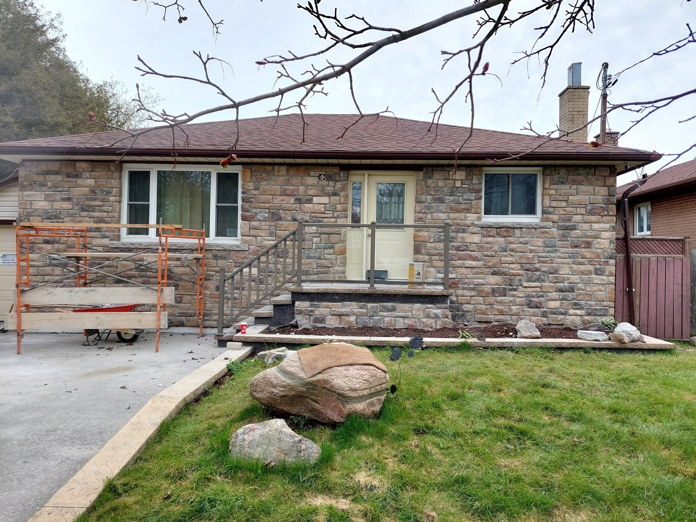
01
Brick repair
Cracked or damaged brick, replacements and wall restoration that bring back the strength and appearance of the masonry on your home or building.
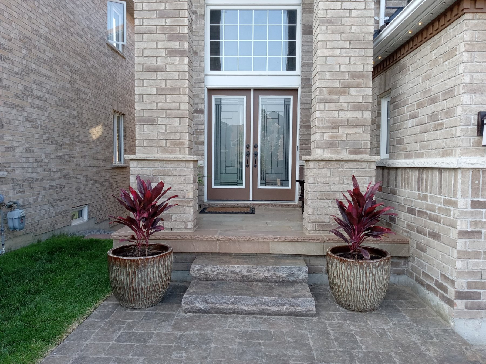
SMC Masonry
Pickering · Durham Region & the GTA · Since 1985
Professional brick, stone, chimney and tuckpointing work, completed by our own skilled masons. Never subcontracted.
Our services
SMC Masonry provides professional masonry repair and restoration across Pickering, Ajax, Whitby, Oshawa and Scarborough, and throughout Durham Region and the Greater Toronto Area.

Cracked or damaged brick, replacements and wall restoration that bring back the strength and appearance of the masonry on your home or building.
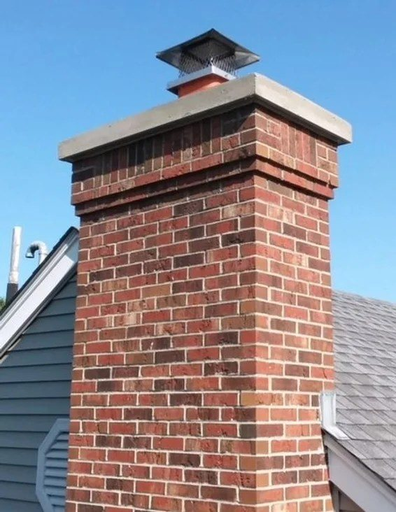
Rebuilding damaged chimney brick, repointing mortar, repairing crowns and matching original brick and mortar so the work lasts and looks like it belongs on your home.
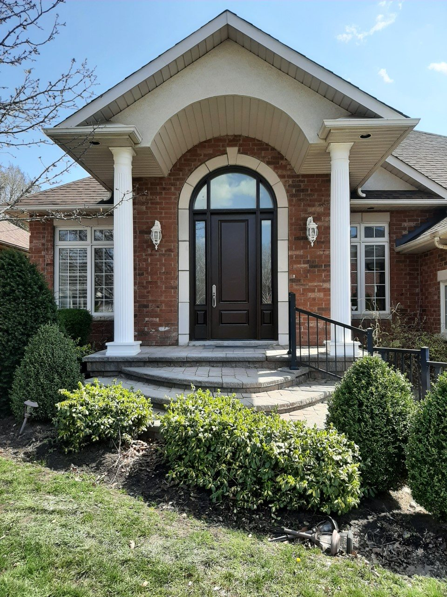
Fresh mortar joints that stop water getting in, steady the wall and restore the original look of brick and stone on walls, chimneys and foundations.
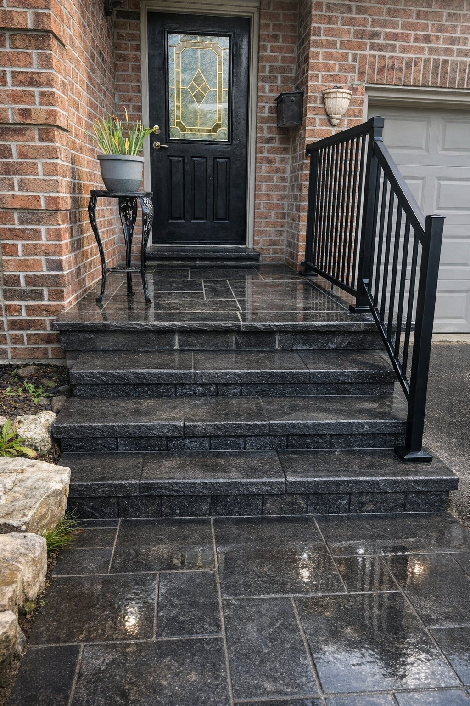
Stone steps, landings, columns and caps built on a proper base for Ontario freeze-thaw weather, finished with premium Peak aluminum railings when you want them.
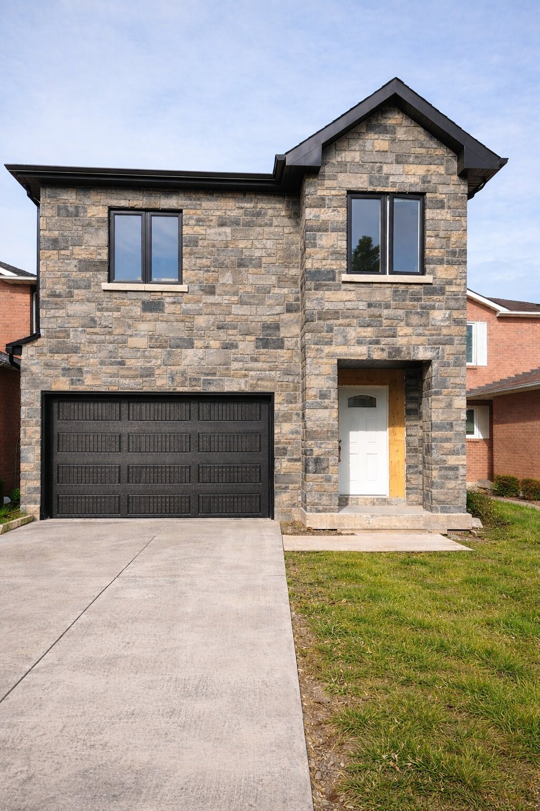
Natural or manufactured stone on foundations, entrances, columns and feature walls, plus structural alterations, block work, and door and window cut-outs.
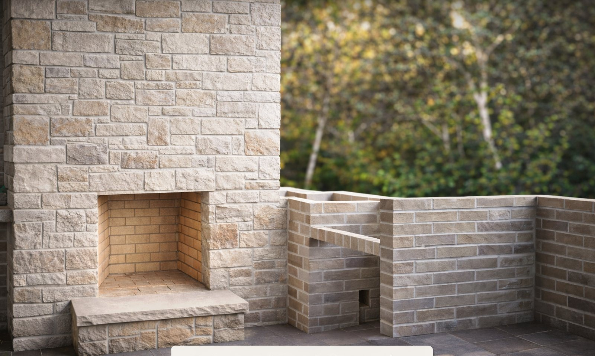
Custom indoor and outdoor fireplaces, from a traditional brick hearth to a rustic stone feature, plus restoration of worn or damaged existing fireplaces.
Project gallery
Stone veneer, chimney rebuilds, front porch renovations and custom work completed for homeowners and businesses.
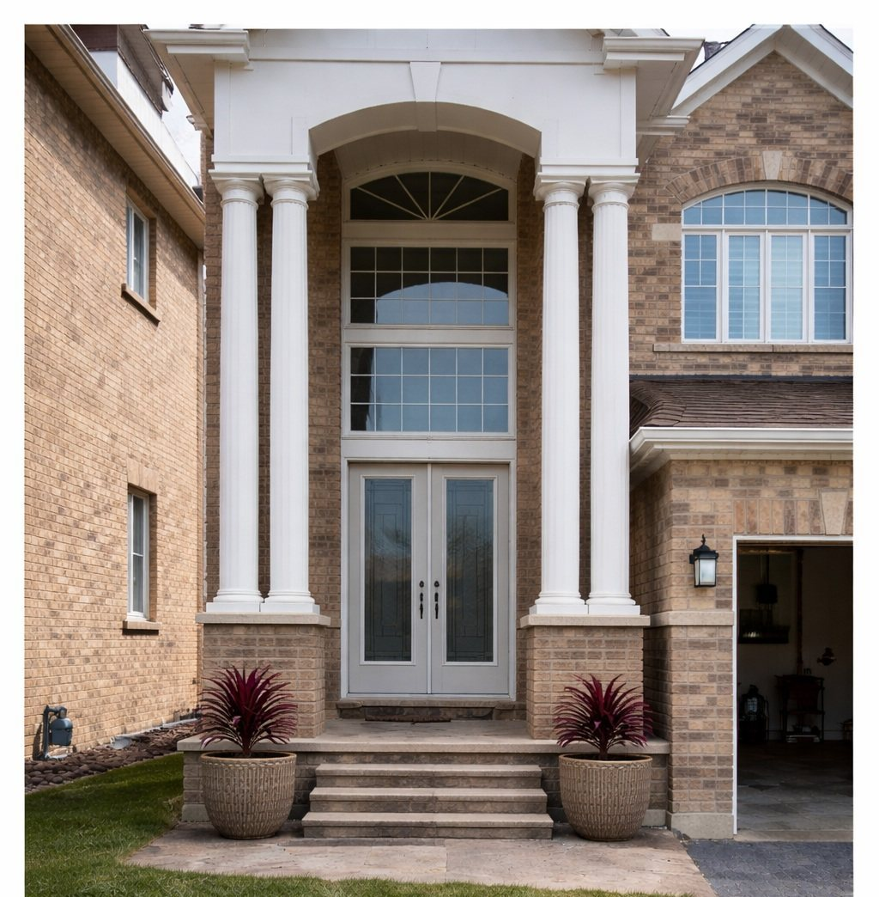
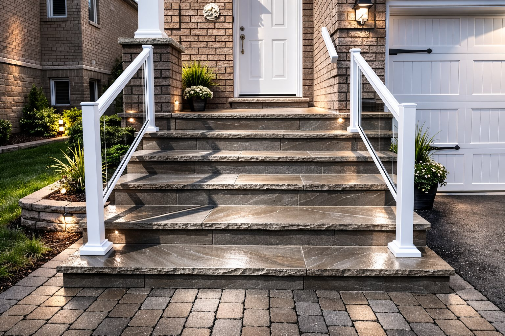
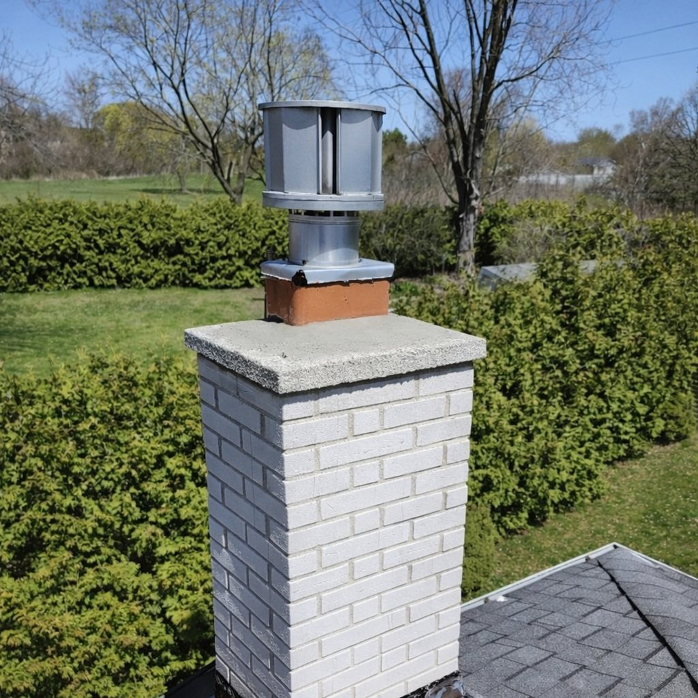
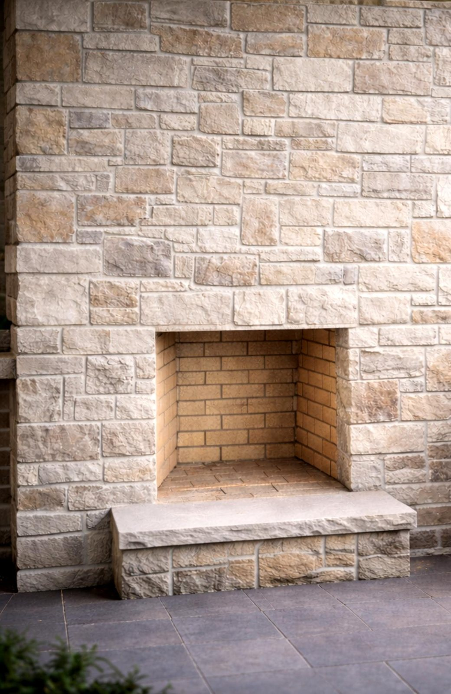
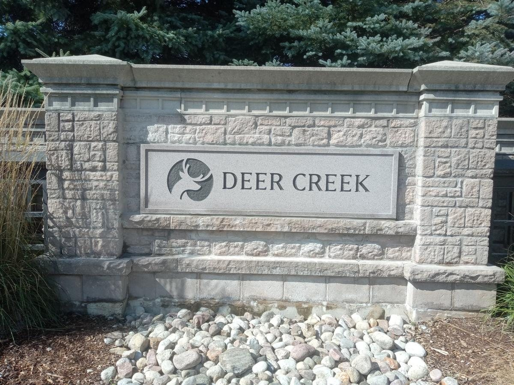
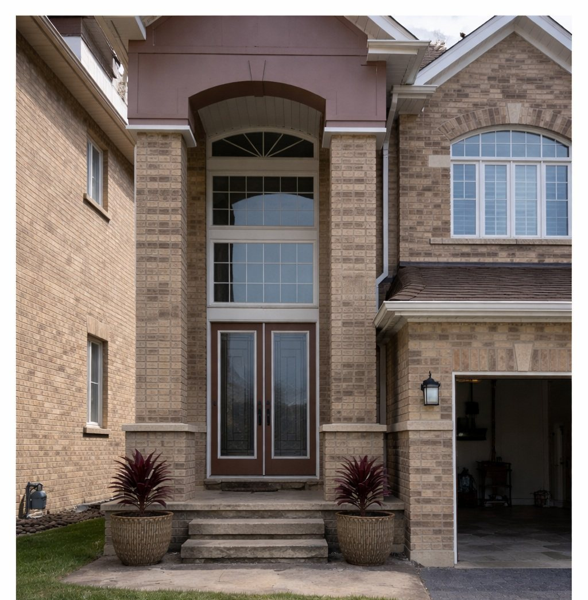
Our story
SMC Masonry is a team of craftsmen dedicated to quality and reliability on every project. Established in 1985, we have spent decades honing our skills, and we still complete 100% of the work with our own employees. We never outsource our projects.
Work is led by owner and Gold Seal certified mason Stephen Daubeny, who is on every project. We are fully covered by WSIB and construction liability insurance, and we stand behind our work with a 100% satisfaction guarantee.
Recognition
HomeStars Best of the Best 2025 (two-time winner) and HomeStars Best of Awards 2026 (five-time winner), plus multiple Consumer Choice Awards for Durham Region.
Reviews
SMC Masonry has been absolutely professional in every aspect of working for us. Stephen was quick and clear in his communication, provided us with a detailed overview of the issues affecting our chimney, and demonstrated incredible knowledge that was evident from his years of experience and passion for his craft. When rebuilding our chimney, the entire crew was timely, efficient, and skilled. They also cleaned up thoroughly after finishing.
Stephen from SMC Masonry did a fantastic job repairing our chimney. He was professional, polite, extremely knowledgeable and had a great crew. They were on time, quiet. They completed the job in one day, cleaned up the area before leaving. His quote was very detailed, and he provided pictures from a drone that showed all the damage that needed repair and found the exact brick match to our house.
Free estimates
Tell us about the brick, chimney, porch or stone work you have in mind and we will get back to you with a free quote.
Contact us
Pickering, ON L1V 2P8